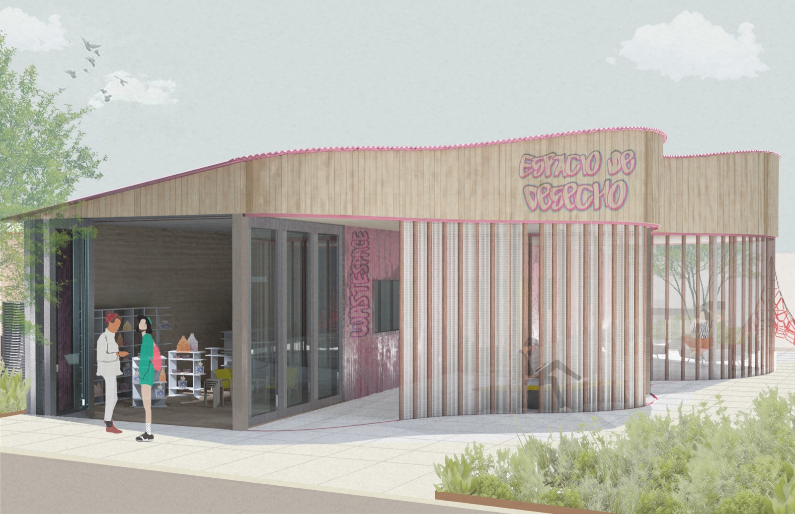
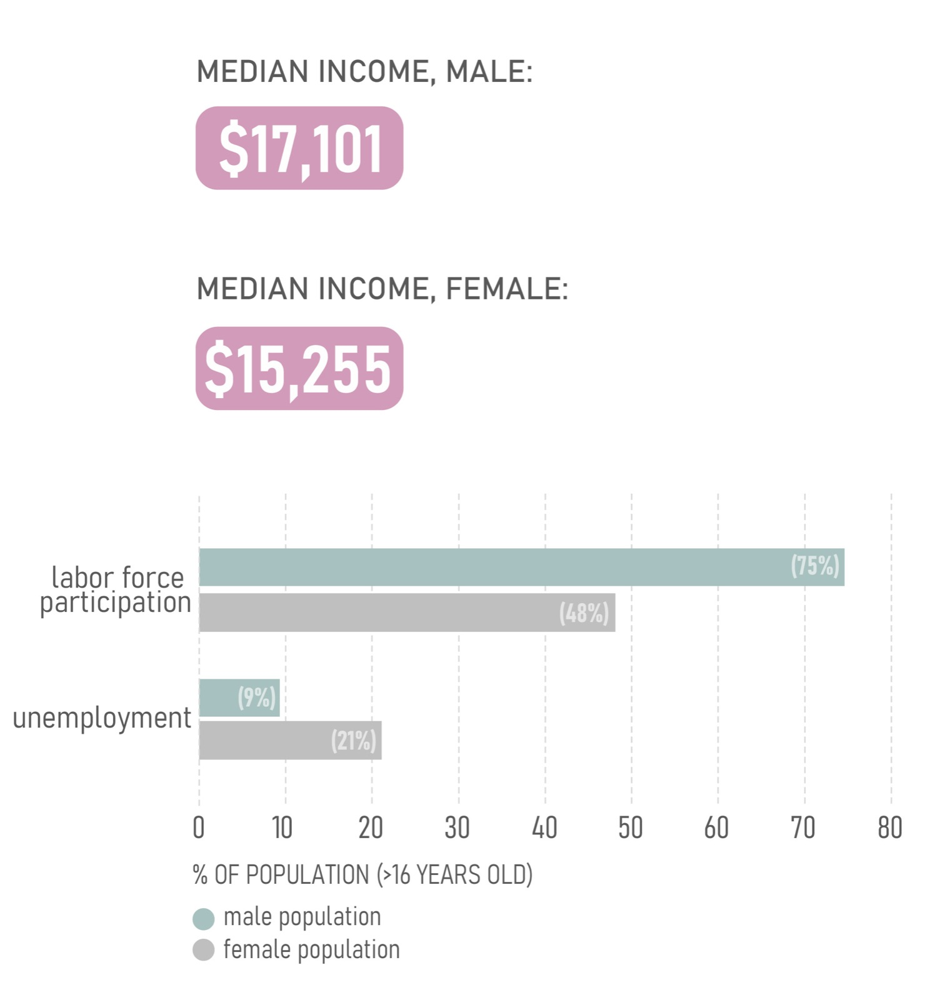
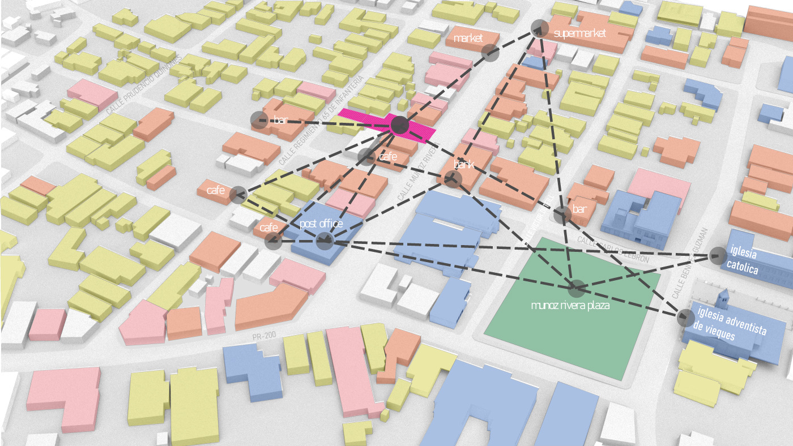
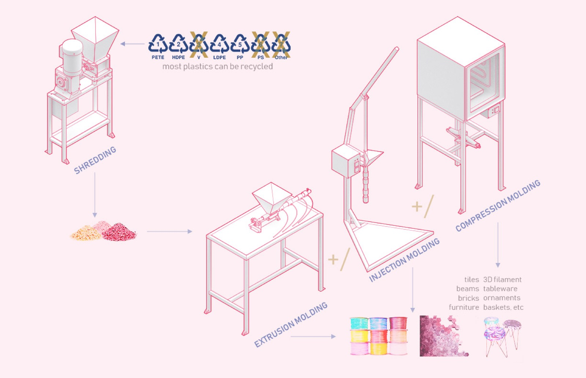
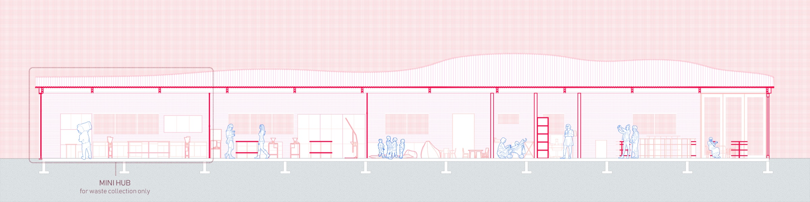
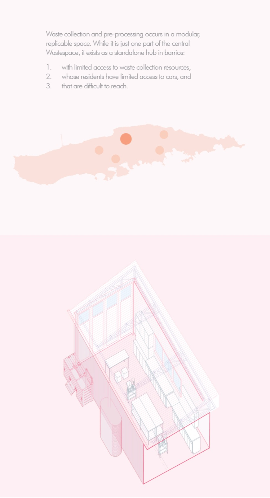
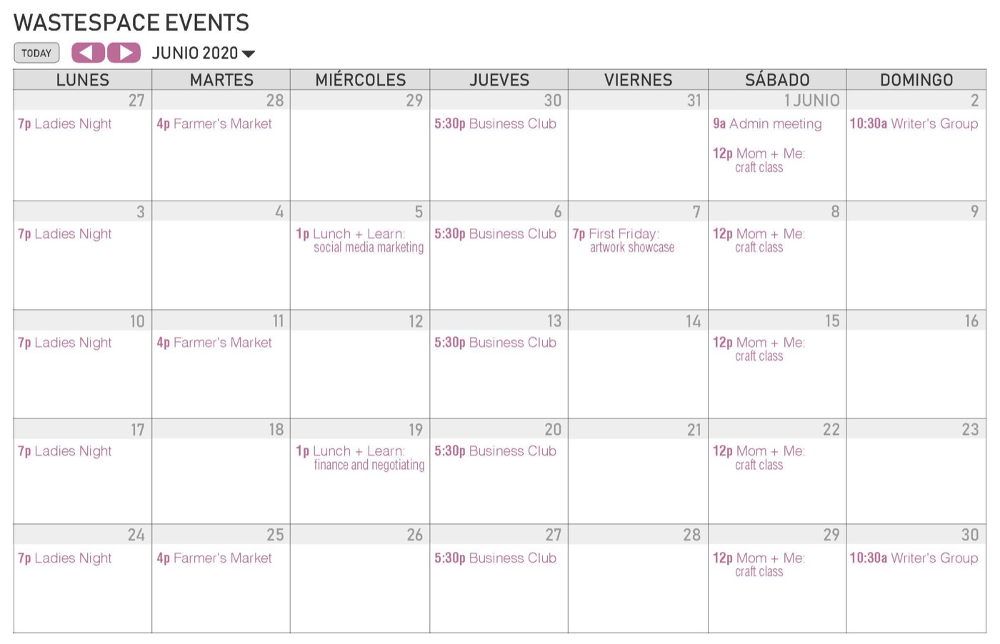

wastespace
Vieques’ only landfill is nearly full, and women are largely missing from the island’s workforce. wastespace is a community hub that turns plastic waste into products, and trains women to make and sell them.

01Context
Materials that could be reprocessed were going straight to a landfill that’s close to capacity. At the same time, women on the island had been systematically shut out of the existing labor force.


02Approach
Plastic moves through the building in three steps. It’s collected and shredded, then reprocessed by extrusion, injection or compression molding on cheap, open-source machines, and finally sold in the store or shown in exhibitions.


03Outcome
Collection points sit across the island, with the full building in one central place. A daycare makes it easier to take part, and a calendar of classes and events keeps the space busy beyond plastic.


The project was featured in 13 proposals to boost resilience in Vieques, Puerto Rico.
The 20-minute library

Say hello.
Working on something for the built environment? I’d love to hear about it.